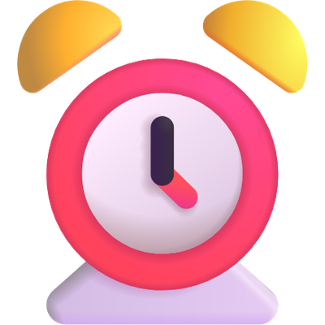

El correo de seguimiento que se escribe solo
Una plantilla para que la IA te deje listo el correo después de cada reunión comercial. Funciona con herramientas gratis: cualquier grabador de reuniones que te dé la transcripción (Fathom tiene plan gratis) y cualquier asistente de IA (Claude, ChatGPT o Gemini en su versión gratis).
[Lo resaltado] es lo que llenas tú.
Antes de empezar
Avísale al cliente que la reunión se va a grabar y para qué. Siempre.
Si usas Claude, conéctale dos cosas. Se hace una sola vez y desde ahí no vuelves a copiar y pegar:
Fathom
Inicia sesión en Fathom. Después, en Claude, abre el conector de Fathom, dale Conectar y acepta los permisos. Así Claude busca la reunión y lee la transcripción solo.
Gmail
En el mismo directorio de conectores busca Gmail y conéctalo con la cuenta desde la que le escribes a tus clientes. Así Claude te deja el correo como borrador, listo para revisar y enviar.
Paso 1 de 4
Consigue la transcripción de la reunión
Si conectaste Fathom, sáltate este paso: Claude la busca solo.
Si usas otro grabador u otra IA, copia la transcripción completa (no solo el resumen).
Paso 2 de 4
Pega esto en tu asistente de IA
Eres mi asistente comercial. Lee la transcripción completa de mi reunión con [cliente o empresa]. Escríbeme el correo de seguimiento que le voy a enviar hoy. Reglas: 1. Saludo corto y un agradecimiento por algo concreto que el cliente dijo o compartió en la reunión. Nada genérico como "gracias por tu tiempo". 2. Una línea que diga "Quedamos así:" y debajo los próximos pasos en viñetas: - "Por mi parte:" lo que yo me comprometí a hacer, con fecha. - "Por tu parte:" lo que el cliente se comprometió a hacer, con fecha si la dijo. Si alguien más quedó involucrado (su jefe, otro equipo), nómbralo. 3. Solo lo que se dijo en la reunión. Si una fecha o un compromiso no quedó claro, márcalo con [POR CONFIRMAR] y no lo inventes. 4. Máximo 120 palabras, en el idioma del cliente y en mi tono: directo, cercano, sin frases de vendedor. 5. Cierra con una sola línea, sin pedir nada nuevo. 6. Si tienes acceso a mi Gmail, déjalo como borrador para el cliente. No lo envíes. Transcripción: [Pégala aquí. Si conectaste Fathom, borra estas dos líneas: Claude la busca solo.]
Paso 3 de 4
Revísalo antes de enviarlo
La IA te deja el correo listo (en el chat o, si conectaste Gmail, en tus borradores), pero lo mandas tú. Revisa tres cosas:
- Que las fechas sean las que acordaron.
- Que no haya nada que el cliente no dijo.
- Que suene a ti. Cambia lo que no dirías.
Paso 4 de 4
Guárdalo como skill (en Claude)
Cuando el correo quede como lo mandarías, cuéntale a Claude qué le cambiaste. Por ejemplo: «Lo dejé más corto, puse las fechas con el día de la semana y en el cierre uso "Quedo atento"». Después pídele:
Guarda la instrucción con estos ajustes como una skill que se llame procesar-reunion
Desde ahí, después de cada reunión solo le escribes esto y te deja el borrador en Gmail, ya con tus ajustes:
Procesa la reunión con [cliente]
Si para crear la skill Claude te pide activar la ejecución de código, actívala en la configuración.

Extra · Claude Pro o Max
Los correos te esperan a la mañana siguiente
Para cuando tienes reuniones todo el día.
Necesitas
El resto de la plantilla funciona gratis. Para esta parte:
- Claude Pro o Max.
- Fathom y Gmail conectados (ver "Antes de empezar") y la skill procesar-reunion guardada (paso 4).
- Cowork, no Claude Code: ahí es donde se crea la tarea.
Con eso listo:
-
En la barra lateral de Cowork entra a Scheduled, dale New task, elige Create with Claude y pega esto:
Tarea
Programa una tarea todos los días hábiles a las 6:00 p. m.: 1. Busca en Fathom las reuniones de hoy con clientes. 2. Por cada una, usa la skill procesar-reunion y deja el correo como borrador en Gmail, dirigido al cliente. 3. No envíes nada. Al terminar, dime cuántos borradores dejaste y para quién.
Si tu Claude ya no muestra Chat y Cowork por separado, pégalo en cualquier conversación.
- Revisa el nombre, la hora y los días que te propone y dale Schedule. La tarea corre en la nube, así que no tienes que dejar el computador prendido.
- Para probarla sin esperar a las 6:00 p. m., ábrela en Scheduled y dale Run now.
Al otro día abres los borradores de Gmail, revisas cada uno como en el paso 3 y los mandas tú. La tarea nunca envía nada sola.
La estructura, por si quieres escribirlo a mano
Hola [nombre], espero estés muy bien.
Gracias por el espacio de [día] y por contarme [algo concreto que compartió].
Quedamos así:
- Por mi parte: [qué haré] para [fecha].
- Por mi parte: [segundo compromiso, si lo hay].
- Por tu parte: [qué hará el cliente].
[Una línea de cierre.]
Lo que hace que funcione: el cliente no tiene que adivinar qué sigue ni quién lo hace.